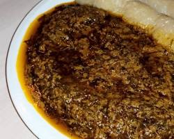

KOK

INGREDIENTS
- Huile de palme rouge: 500ml
- Oignons: 2 gros
- poireau et céleri: 1 bouquet de chaque
- Ail 2 a 3 gousses (selon les gouts)
- Piment (facultatif)
- sel et poivre
- poisson fumé
ETAPES
- Préparation
- Mélange de la pate
- préparatio, des feuilles de babanier
- Emballage du kok
- Cuisson a la vapeur